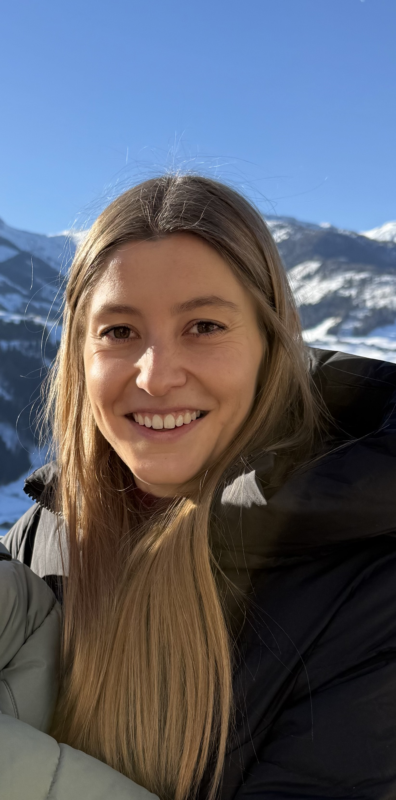
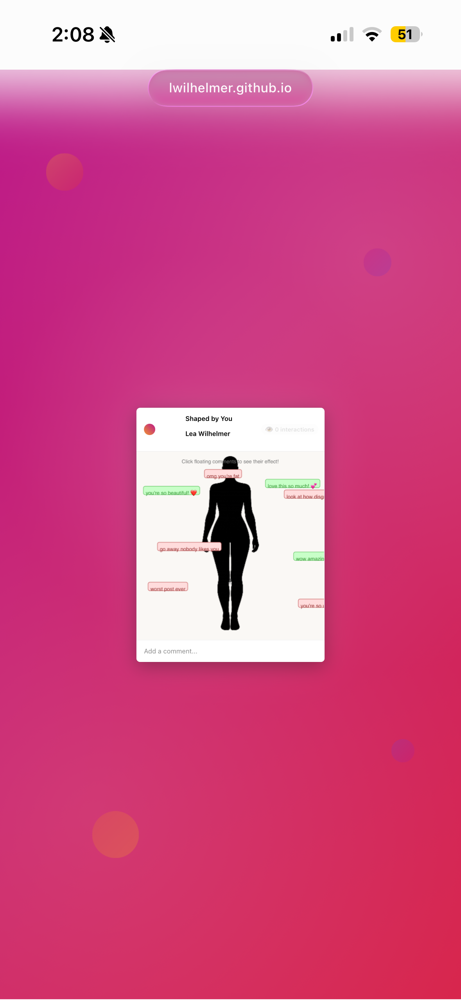
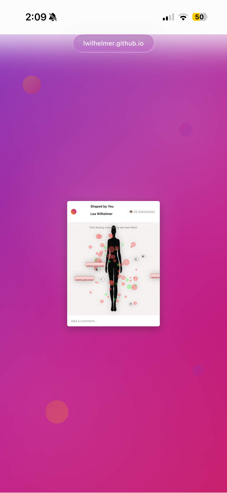

LEA WILHELMER
( SHE/HER )
Portfolio: LINK
About the Artist
Lea Wilhelmer is a digital media artist and student at San José State University, where she is pursuing a BFA in Digital Media Art. Originally from Austria, she moved to California at a young age and brings a cross-cultural perspective to her work. Her practice explores identity, the internet, and the ways digital environments shape how people see themselves and others. She works primarily with web-based media, using HTML, CSS, and JavaScript to create interactive experiences that respond to user input. Wilhelmer is interested in how social media, algorithms, and online feedback systems influence perception, especially around the body and self-image. Her work often invites viewers to participate directly, making them aware of their role within these systems. Through interactive installations, she aims to visualize invisible pressures of digital life and encourage reflection on how identity is constructed in a hyperconnected world.
Shaped by You
My work explores how digital environments shape identity, especially through social media. I am interested in how constant feedback, such as comments, likes, and views, influences the way people see themselves and their bodies. In Shaped by You, I create an interactive experience where a digital body changes based on user comments. Both positive and negative feedback affect the body, showing that even “nice” comments can create pressure and unrealistic expectations. As the viewer continues to interact, the changes build up and become more extreme, leading to a loss of control and a distorted final form. I use web-based tools to create work that is simple but responsive, allowing the viewer to actively shape what they see. By making the audience part of the system, my work highlights how we are not only influenced by digital platforms, but also contribute to them. Through this project, I want to make visible the hidden pressure of online spaces and encourage reflection on how identity and body image are shaped in a hyperconnected world.

